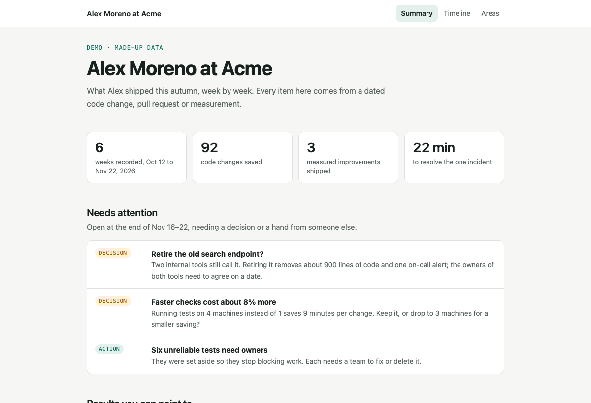

Proof of what you shipped.
Once a week, Claude Code reads your git history and your Claude Code sessions, then writes up what you shipped: dated, with commit hashes, PRs and measured results. You end up with a running record for performance reviews, promotion packets and 1:1s, plus a plain-language page you can show a manager.

The demo is six weeks of made-up work for a fictional engineer. Your copy fills the same pages from your own history.
What you get
A note for every week
Commits per repo, lines changed, PRs, tickets, test counts, dated bullets per project and open items carried forward.
A file for every project
Grows week by week: what it is, your role, timeline, decisions and outcomes. Ready to paste into a promotion packet.
Pages for your manager
Headline numbers, measured before-and-after results, where the effort went and what needs a decision. No jargon, no hashes.
How it works
Everything that can be counted runs as a plain script. Claude only writes the prose.
Collect
./scripts/run-weekly.sh --no-aigathers your commits and Claude Code sessions since the last run and writes a facts-only draft. No AI, no tokens.Write up
/weekly-updatein Claude Code turns every pending draft into a weekly note, updates the project files and refreshes the share pages.Share
Open
share/index.html. The pages work straight from disk and make no network requests. Zip the folder or host it behind your company's login.
Private by default
- Runs locally. Nothing is uploaded anywhere.
- Redacts passwords, tokens, keys, private IPs and connection strings from the collected evidence.
- Credits only your work, with every claim dated and tied to a commit, PR or measurement.
- Keep your copy private. It describes your employer's work.
Get started
Needs Claude Code, Python 3 and git. gh is optional.
# 1. Create a private copy from the template, then:
cd receipts
$EDITOR config.json # who you are, which repos count as work
./scripts/run-weekly.sh --no-ai # collect + draft (no AI)
claude "/weekly-update" # write it up
open share/index.htmlFull setup, scheduling and customization are in the README.